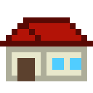
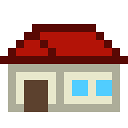

像素藝術繪製(Pixel Art)

 

本站圖片皆為站長本人所繪製，使用像素藝術專門繪圖軟體Aseprite，
由於站長非常喜愛街機和懷舊遊戲，於是自己學習了像素藝術的繪製。
上面圖片皆是16*16的大小，少少像素點就能表現出各式各樣的東西喔！
俄羅斯方塊(Tetris)
誕生於1984年的蘇聯，在1990年代風靡全球的遊戲。
站長對此遊戲鑽研許多，有遊玩的平台有TETRio、Tetris Effect，
並且在TETRio上為全球前10%玩家(Rank為SS)。